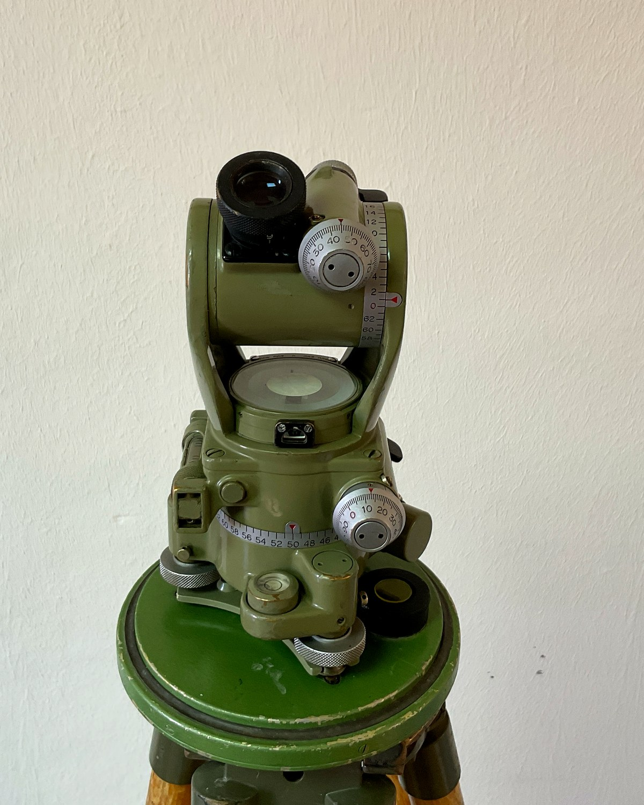
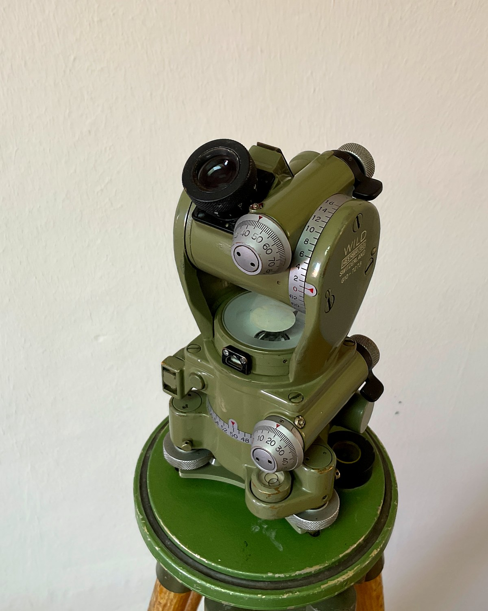
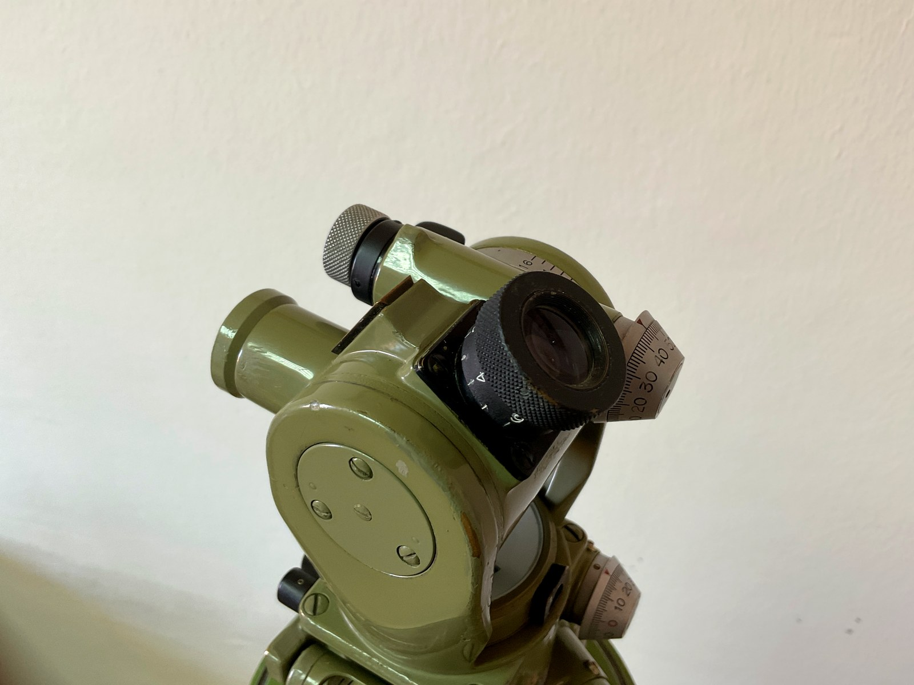

Goniómetro Wild T-20
Goniómetro completo y reiterador, preparado para trabajos que requieren una mayor precisión angular.
Academia de Artillería
Explore sus componentes e identifique los mandos, niveles, sistema de orientación y elementos empleados para realizar las lecturas.

Resumen de sus características principales, sistema de lectura y posibilidades de empleo.

La vista general localiza cada elemento y la fotografía de detalle permite reconocer sus mandos, visores y dispositivos de lectura.
El área sombreada identifica el componente seleccionado sobre la vista general.
Observación

Las cinco vistas permiten observar el instrumento desde todos sus lados.
El nivel tubular puede estar corregido o descorregido. El procedimiento cambia al comprobar la burbuja tras girar el instrumento 180º.
Al girar el instrumento, la burbuja permanece entre sus referencias de calado.
Póngalo paralelo a la línea formada por dos tornillos nivelantes, por ejemplo T1 y T2.
Gire T1 y T2 en sentidos contrarios hasta que la burbuja quede centrada.
Coloque el nivel perpendicular a la línea formada por T1 y T2.
Centre de nuevo la burbuja actuando solamente sobre T3.
Gire el instrumento a una posición cualquiera. Si la burbuja permanece entre sus referencias, el nivel está corregido. Si se desplaza, está descorregido.
Aunque el nivel parezca estar bien, conviene comprobarlo siempre como si pudiera estar desajustado.
La burbuja permanece centrada cuando se gira el instrumento.
Al girar el instrumento 180º, la burbuja se desplaza y deben determinarse unas referencias de calado actuales.
Póngalo paralelo a la línea formada por T1 y T2.
Gire T1 y T2 en sentidos contrarios hasta centrarla.
Si el nivel está desajustado, la burbuja se desplazará.
Actúe sobre T1 y T2 hasta corregir la mitad del desplazamiento y marque los extremos de la burbuja. Esas marcas serán las referencias de calado actuales.
Continúe como en el caso anterior: gire 90°, ajuste con T3 y compruebe el nivel usando las nuevas referencias.
El vídeo muestra cómo se desplaza la burbuja y cómo se fija una nueva referencia de nivelación.
Observación de la aguja imantada y orientación aproximada al norte magnético.
La lupa permite observar la aguja imantada mientras se mantiene accionada la palanca de liberación. Al soltarla, la aguja vuelve a quedar bloqueada.
La práctica interactiva se adaptará posteriormente al sistema de lectura del T-20, manteniendo la misma lógica de observación empleada en el recurso del G-10.